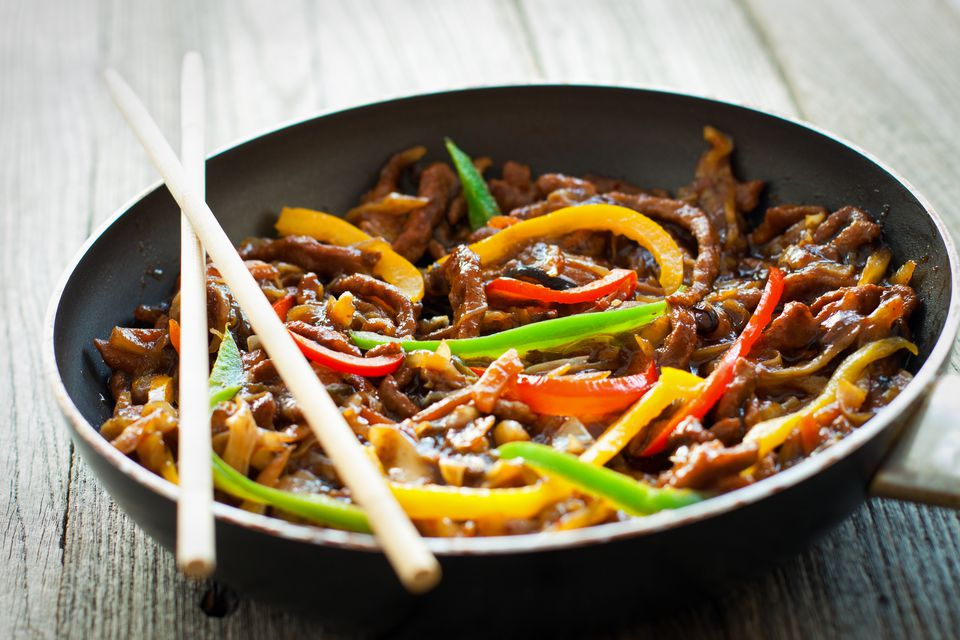
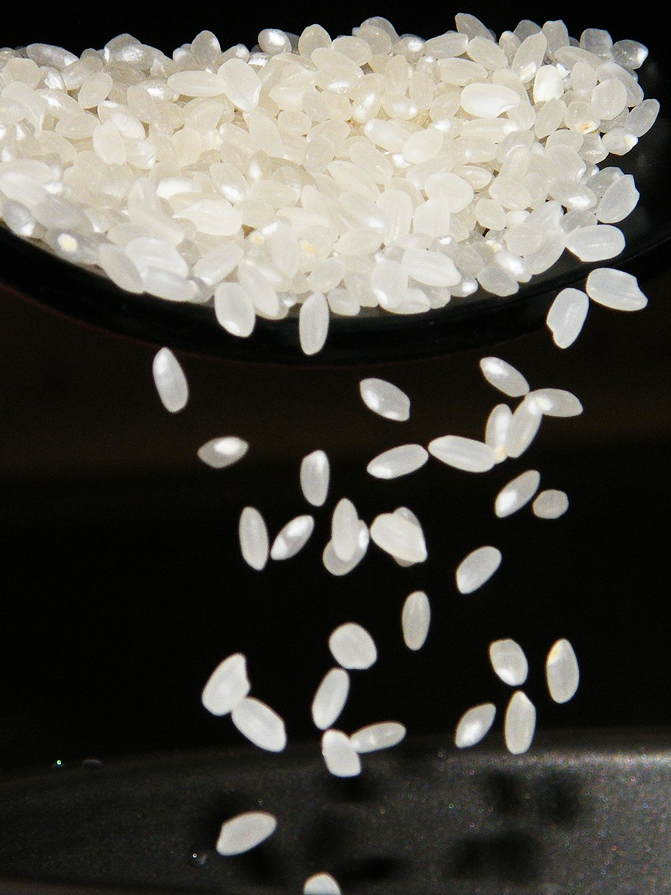

Get to know us more!
Chinese cuisine is an important part of Chinese culture, which includes cuisine originating from the diverse regions of China, as well as from Chinese people in other parts of the world. Because of the Chinese diaspora and historical power of the country, Chinese cuisine has influenced many other cuisines in Asia, with modifications made to cater to local palates. Chopsticks are the main eating utensils for Chinese food, which can be used to cut and pick up food.
Not only is our food delicious, it is also made with LOVE. We use fresh organic ingredients to make our food the number Chinese spot in the city! Our food consists of Rice, Noodles, Wheat, Soybean Products, Vegatables, Herbs, & Dessets. Some of our seasonings are fresh ginger root, garlic, scallion, cilantro and sesame are widely used in many regional cuisines. Sichuan peppercorns, star anise, cinnamon, fennel, cloves and white peppers are also used in different regions.
Historical Background!
Information provided from wikipedia.
The preference for seasoning and cooking techniques of Chinese provinces depend on differences in historical background and ethnic groups. Geographic features including mountains, rivers, forests and deserts also have a strong effect on the local available ingredients, considering climate of China varies from tropical in the south to subarctic in the northeast. Imperial, royal and noble preference also plays a role in the change of Chinese cuisines. Because of imperial expansion and trading, ingredients and cooking techniques from other cultures are integrated into Chinese cuisines over time. The most praised "Four Major Cuisines" are Chuan, Lu, Yue and Huaiyang, representing West, North, South and East China cuisine correspondingly. Modern "Eight Cuisines" of China are Anhui, Cantonese, Fujian, Hunan, Jiangsu, Shandong, Sichuan, and Zhejiang cuisines. Color, smell and taste are the three traditional aspects used to describe Chinese food, as well as the meaning, appearance and nutrition of the food. Cooking should be appraised from ingredients used, cuttings, cooking time and seasoning.
Chinese society greatly valued gastronomy, and developed an extensive study of the subject based on its traditional medical beliefs. Chinese culture initially centered around the North China Plain. The first domesticated crops seem to have been the foxtail and broomcorn varieties of millet, while rice was cultivated in the south. By 2000 BC, wheat had arrived from western Asia. These grains were typically served as warm noodle soups instead of baked into bread as in Europe. Nobles hunted various wild game and consumed mutton, pork and dog as these animals were domesticated. Grain was stored against famine and flood and meat was preserved with salt, vinegar, curing, and fermenting. The flavor of the meat was enhanced by cooking it in animal fats though this practice was mostly restricted to the wealthy.
What's Not to Like About Our Food!
Rice is a major staple food for people from rice farming areas in southern China. Steamed rice, usually white rice, is the most commonly eaten form. People in southern China also like to use rice to make rice gruel as breakfast. Rice is also used to produce beers, wines and vinegars. Rice is one of the most popular foods in China and is used in many dishes. Glutinous rice ("sticky rice") is a variety of rice used in many specialty Chinese dishes.
In wheat-farming areas in Northern China, people largely rely on flour-based food, such as noodles, bing (bread), jiaozi (a kind of Chinese dumplings), and mantou (a type of steamed buns).
Chinese noodles come dry or fresh in a variety of sizes, shapes and textures and are often served in soups or fried as toppings. Some varieties, such as Shou Mian (寿面, literally noodles of longevity), is an avatar of long life and good health according to Chinese traditions. Noodles can be served hot or cold with different toppings, with broth, and occasionally dry (as is the case with mi-fen). Noodles are commonly made with rice flour or wheat flour, but other flours such as soybean are also used in minor groups.
 